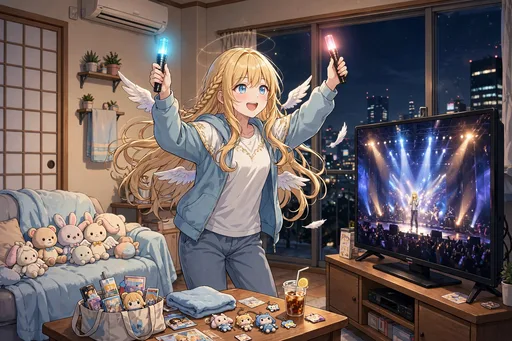
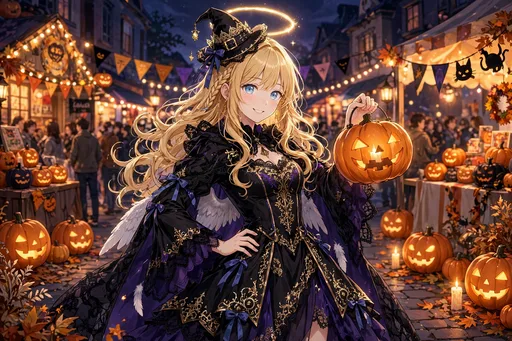

セラフィナ 第5弾『すっかり日本の生活者編』イラストパック
ストーリー紹介
日本の暮らしにすっかり馴染んだ、生活者としての日常を描く30枚です。部屋着の休日や推し活の予定で埋まる手帳、初売りの行列、引っ越しの挨拶、大掃除や確定申告の苦戦まで。一年の思い出の品々を並べ、帰還の話が出ても「ただいま」と大阪の夕焼けに微笑む、降臨から一周年の締めくくりの物語です。
部屋着で過ごす休日、推し活の予定で埋まる手帳、初売りの行列や引っ越しの挨拶、大掃除や確定申告への苦戦など、生活者ならではの場面が続きます。一年の思い出の品々を並べる場面を経て、帰還の話が出ても大阪の夕焼けに「ただいま」と微笑む——降臨から一周年の締めくくりにふさわしい30枚です。
ダウンロード販売（ZIP 3分割）／全年齢／BOOTH「angel222」で販売中
商品情報
| タイトル | セラフィナ 第5弾『すっかり日本の生活者編』イラストパック｜見習い天使の現代日本コメディ |
|---|---|
| 収録内容 | イラスト30点（ダウンロード販売） |
| 価格 | 500円 |
| 販売 | BOOTH「angel222」 https://angel222.booth.pm/items/9076232 |
| 備考 | 全年齢。登場するキャラクターは架空の存在です。イラストにはAI生成を含みます |
場面紹介（全30枚）


- 1. 部屋着でゴロゴロする休日 — 部屋着でゴロゴロする休日の場面。
- 2. 推しのライブ映像鑑賞会 — 部屋で推しのライブ映像鑑賞会を開く場面。
- 3. 福袋の戦利品を開封 — 福袋の戦利品を開封する場面。
- 4. 初売りの行列に並ぶ — 初売りの行列に並ぶ場面。
- 5. 商店街の顔なじみ — 商店街の顔なじみになった場面。
- 6. 推しの新曲フラゲ日 — 推しの新曲のフラゲ日に浮かれる場面。
- 7. 新生活の模様替え — 新生活に向けて模様替えをする場面。
- 8. ゴールデンウィークの予定表（ほぼ推し活） — ゴールデンウィークの予定表を作る場面。
- 9. 観葉植物を育て始める — 観葉植物を育て始める場面。
- 10. 初めての人間ドックに緊張 — 初めての人間ドックに緊張する場面。
- 11. 盆踊りに参加 — 盆踊りの輪に参加する場面。
- 12. 台風の日の備蓄チェック — 台風の日に備蓄をチェックする場面。
- 13. ハロウィンの本気コスプレ — ハロウィンに本気のコスプレで臨む場面。
- 14. 年賀状を羽根ペンで書く — 年賀状を羽根ペンで書く場面。
- 15. 大掃除で「買っただけのグッズ」が出てくる — 大掃除で「買っただけのグッズ」が次々出てくる場面。
- 16. 除夜の鐘と年越しの瞬間 — 除夜の鐘と年越しの瞬間を迎える場面。
- 17. 初夢に推しが出てくる — 初夢に推しが出てくる場面。
- 18. 節分の豆まきで鬼役をやる — 節分の豆まきで鬼役をやる場面。
- 19. ひな人形と並んで座る — ひな人形と並んで座る場面。
- 20. 確定申告の書類に苦戦する — 確定申告の書類に苦戦する場面。
- 21. 引っ越しの挨拶で粗品タオルを配る — 引っ越しの挨拶で粗品タオルを配る場面。
- 22. 新年度の決意（手帳を新調） — 新年度の決意とともに手帳を新調する場面。
- 23. 天界への定期報告書に日本のことばかり書く — 天界への定期報告書に、日本のことばかり書いてしまう場面。
- 24. 上司に呼び出されて焦る — 天界の上司に呼び出されて焦る場面。
- 25. 日本語の早口言葉に挑戦 — 日本語の早口言葉に挑戦する場面。
- 26. 帰還の話が出て、街を見渡す — 帰還の話が出て、街を見渡す場面。
- 27. 一年間の思い出の品々を並べる — 一年間の思い出の品々を並べる場面。
- 28. 大阪の夕焼けと「ただいま」 — 大阪の夕焼けに向かって「ただいま」とつぶやく場面。
- 29. 仲良くなった人々との集合写真風 — 仲良くなった人々との集合写真風の一枚。
- 30. 降臨から一周年、すっかり馴染んだ笑顔 — 降臨から一周年、すっかり馴染んだ笑顔のキービジュアル。
ほかのイラストパック
物語の次は、第6弾『ライバル降臨編』です。